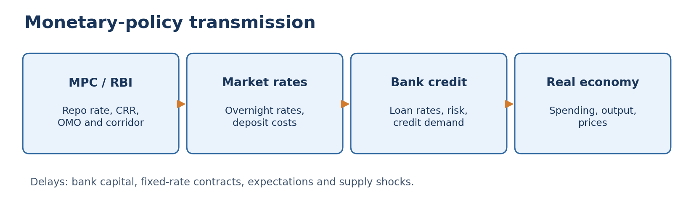
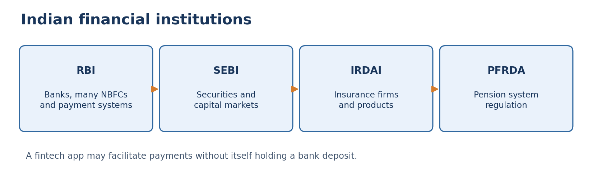
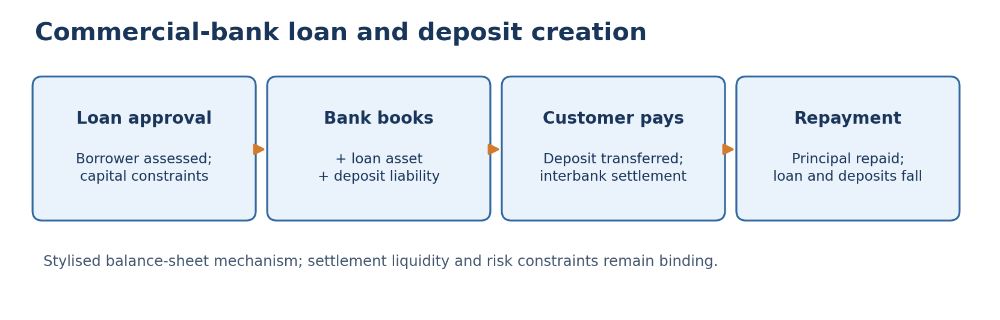

Syllabus, index and topic summary
TGPSC Group I | Paper IV: Economy and Development | Unit I: Indian Economy and Development | Topic 3: Money and Banking. Draft prepared 23 October 2026. Academic status: NOT APPROVED.
Notification 02/2024 syllabus wording: “Money and Banking: Money supply, Structure of Indian Banking and non-banking financial institutions; Reforms in Banking sector; Regulation of credit by RBI”. R1 PRIMARY-SOURCE PASS (27 October 2026): original Commission Notification 02/2024, Annexure-II, PDF index 30 / printed page 31, lines 1726–1727, directly checked. Official Commission PDF [S19]. Four syllabus components map to detailed sections 1–3, 4–8, 10–11 and 9/12–14. R1 establishes syllabus correspondence only, not R2–R8 academic accuracy.
| Syllabus component | Core sections | Exam deliverable |
|---|---|---|
| Money supply | 1–3 | Functions, monetary aggregates, money creation, worked calculations |
| Indian banking structure | 4–6, 8 | Scheduled banks, public/private banks, RRBs, cooperatives, SFBs, payments banks |
| Non-banking financial institutions | 4, 7–8 | NBFCs, markets, financial regulators, microfinance, payments |
| Banking reforms | 10–11 | Narasimham, Basel, mergers, NPA, IBC, financial inclusion, technology |
| RBI regulation of credit | 9, 12–14 | MPC, repo, CRR, SLR, OMO, PSL, prudential and selective controls |
| Telangana applications | 6, 8, 13–15 | District credit coordination, farm credit, SHGs, urban MSMEs |
Central thesis: Modern money is predominantly a network of bank and central-bank liabilities. Its quantity cannot be understood without bank balance sheets and liquidity, while credit allocation requires prudential regulation and local information. Indian banking reform has widened access and strengthened supervision but has not eliminated rural exclusion, cyber risk or bad-loan cycles. The RBI's instruments influence the cost and availability of credit; their effects depend on transmission, demand, bank health and regional institutions.
Reading route: Sections 1–3 establish money concepts; 4–8 explain the financial architecture; 9–14 analyse reforms and credit regulation; 15 connects the national framework to Telangana. Read the quick revision independently before solving the original MCQs. Use the six mains answers as writing models, not as authenticated past examination questions.
Official PYQ provenance: No question is labelled a verified TGPSC official PYQ in this chapter because the original commission question paper and question number were not authenticated for any item. All MCQs and mains prompts below are original practice.
Standalone quick revision: Money and Banking
A. Seven-minute concept map
Money is a stock; payments are flows. Currency, transferable bank deposits and certain other liabilities enter the RBI's monetary aggregates. A UPI instruction transfers existing claims; a new bank loan can create a new deposit. Financial wealth includes many instruments not counted as money. Liquidity means ease of conversion into payment, not a guarantee of safety.
M0: currency in circulation + banks' RBI deposits + other RBI deposits. M1: currency with public + bank demand deposits + other RBI deposits. M2: M1 + post-office savings-bank savings deposits. M3: M1 + time deposits with banks. M4: M3 + all post-office deposits excluding NSCs. The textbook 'money multiplier' is conditional on currency preference, reserve holdings, bank capital, credit demand and risk; never treat it as an unconditional fixed ratio.
Banking structure: Public-sector, private-sector and foreign commercial banks coexist with RRBs, cooperative banking institutions, small finance banks and payments banks. A scheduled bank is included in the Second Schedule to the RBI Act. The Department of Financial Services identifies 12 PSBs. Andhra Bank merged into Union Bank of India in April 2020. SFBs undertake banking with an inclusion focus; payments banks have restricted lending powers. [S06]
NBFCs: Non-bank financial intermediaries serve specialised credit markets. They are regulated according to applicable RBI categories and scale-based risk rules. Eligible NBFCs may accept deposits under restrictions, but NBFC deposits do not receive DICGC protection. The insurance limit for eligible deposits at an insured bank is ₹5 lakh per depositor per bank in the same right and capacity, including principal and interest. Multiple branches of one bank do not multiply this limit. [S08]
RBI legal basis: RBI Act, 1934; Banking Regulation Act, 1949; Payment and Settlement Systems Act, 2007. MPC: six members, policy repo rate, notified CPI inflation target; do not confuse a historical observed repo rate with today's rate. CRR is RBI cash balances; SLR is specified liquid assets; OMO is RBI purchase/sale of government securities; SDF absorbs liquidity; MSF provides marginal overnight borrowing. 25 basis points = 0.25 percentage point.
Credit regulation: Quantitative instruments affect overall liquidity and cost. Selective/prudential instruments influence borrower sectors and risk: PSL, exposure norms, capital, provisioning, LTV and risk weights. For applicable domestic commercial banks the broad PSL target is 40% of ANBC or prescribed equivalent; subtargets and exceptions differ by bank category and change through directions. [S16]
Reform chronology: 1969/1980 nationalisation; Narasimham I (1991) and II (1998); prudential norms and new private-bank competition; SARFAESI (2002); IBC (2016); public-bank amalgamations in 2019/2020; financial inclusion and payment innovations. Banking reform includes governance and risk control, not merely privatisation.
Asset quality: NPA classification generally involves more than 90 days overdue for term loans, with product-specific rules. Gross NPA is not net NPA. Write-off ≠ recovery. DFS/RBI data show scheduled commercial bank GNPA stock of ₹10,36,187 crore (31 March 2018) versus ₹3,86,482 crore (31 March 2026); do not quote these as ratios. [S15]
B. Compare in one glance
| Pair | Critical distinction |
|---|---|
| Money stock / payments volume | Liability outstanding at a date / transactions over a period |
| Currency in circulation / with public | Includes bank vault cash / excludes bank vault cash |
| M1 / M3 | Narrow money / adds bank time deposits |
| Bank / NBFC | Bank licence and payment/deposit powers / specialised non-bank intermediation |
| SFB / payments bank | Inclusion-oriented lending permitted / lending restricted by licence |
| CRR / SLR | Balances with RBI / specified liquid assets maintained by bank |
| Repo / reverse repo | RBI supplies liquidity / RBI absorbs liquidity under relevant facility |
| SDF / MSF | Absorption floor / marginal borrowing ceiling |
| Capital / liquidity | Loss-absorbing equity and eligible capital / ability to meet cash obligations |
| Gross NPA / write-off | Classified outstanding impaired asset / accounting removal, not necessarily recovery |
| RBI / NABARD | Monetary and banking regulator / rural-development and related supervisory functions |
| UPI / CBDC | Payment instruction network / central-bank digital liability |
C. Telangana answer anchors
In Kamareddy, the Lead District Manager's coordination role illustrates district credit planning and priority-sector implementation. A Nalgonda SHG loan illustrates bank credit, repayment capacity and complementary market access. A Warangal MSME illustrates cash-flow underwriting and working-capital needs. Hyderabad demonstrates digital payments, formal services credit and external-demand exposure. Treat these as analytical case illustrations unless a dated district statistic is explicitly sourced; never generalise old district branch figures to the entire state.
D. Mains-ready evaluative sentence
“Financial inclusion should be judged not by accounts opened or payments counted alone, but by safe deposits, affordable and suitable credit, reliable access, fair recovery and resilience against shocks.”
E. Common traps
Do not assert that all NBFCs are prohibited from deposits, all deposits are insured, every repo cut instantly reduces EMIs, the RBI sets the Union Budget, a bank's capital is its CRR cash, a falling NPA stock proves cash recovery, or digital transaction volume equals growth of M3. A strong answer identifies the relevant balance sheet, legal authority, transmission channel and district-level consequence.
Cycle37 calculation checks: M2 = M1 + post-office savings deposits; M3 = M1 + bank time deposits (not M2 plus time deposits); M4 = M3 + all eligible post-office deposits excluding NSCs. DICGC's ₹5 lakh cap applies per depositor per insured bank in the same right and capacity, aggregating eligible principal and interest across branches—not per account. [S01, S20]
Detailed textbook notes: Money, banking and the regulation of credit
1. Why money exists: functions, liquidity and institutional trust
Money is an institution, not merely printed paper
Money solves a coordination problem. In barter, the seller of rice must find someone who both wants rice and offers precisely what the seller wants in return: the double coincidence of wants. A generally accepted medium of exchange separates the two transactions. Modern money also provides a unit of account for comparing prices, a store of value for carrying purchasing power across time, and a standard of deferred payment for writing contracts and debts. These functions are related but not identical. High inflation can destroy the store-of-value function while a currency remains widely used to settle transactions. A bank deposit may serve as spendable money without being legal-tender currency. The economic usefulness of money depends on convertibility, payment networks, legal enforceability and confidence in the issuer, not simply on its physical form.
In India, the Reserve Bank of India (RBI) has the statutory monopoly of issuing banknotes under the Reserve Bank of India Act, 1934, subject to the legal framework governing denominations and circulation; the Government of India issues coins. Notes and coins constitute currency, but a household's transferable deposit in a scheduled commercial bank is also part of the money stock. An electronic instruction through UPI normally transfers existing bank-deposit balances; it does not itself create additional money. Similarly, a credit-card purchase creates a payment obligation and may involve bank credit, but the card is not a separate monetary aggregate. These distinctions matter whenever a policy announcement claims that digital payments automatically expand the money supply. [S01, S02, S10]
Monetary assets differ by liquidity and risk
Liquidity is the ease of converting an asset into a means of payment quickly and without significant loss. Cash is immediately spendable; a current-account balance can be transferred; a fixed deposit may require premature withdrawal and a penalty; a mutual-fund unit must be redeemed at a market-dependent value. A treasury bill is usually highly liquid in financial markets but is not counted as a household demand deposit. Thus money, near-money and financial wealth overlap without being identical. The distinction is particularly useful for explaining why M3 includes bank time deposits while marketable shares do not form part of conventional monetary aggregates.
The State's role extends beyond printing notes. Banks must maintain prudential capital and liquidity; payments must settle reliably; fraud and cybercrime must be contained; and insolvency rules must establish who bears losses. The RBI's regulation of banks is consequently part of monetary stability. In a Telangana village, a farmer may receive a direct-benefit transfer into a bank account, withdraw cash through a business correspondent and repay a crop loan digitally. The same rupee of purchasing power can move among forms without representing three separate units of money. The exam requires distinguishing the stock of money at a date from the flow of payments during a period.
Competing perspectives
Classical quantity-theory reasoning emphasises that sustained excessive monetary growth relative to real output can generate inflation. Keynesian and credit-theory perspectives stress that demand for money, bank lending, expectations and unused productive capacity alter the short-run relationship. Modern central banks therefore study monetary aggregates but do not mechanically equate a percentage increase in M3 with the same inflation rate. A district's high digital transaction count may show improved access, while a weak deposit base or distressed borrowers may still constrain productive credit. Monetary statistics and financial-inclusion statistics answer different questions.
2. RBI monetary aggregates: reserve money, M1, M2, M3 and M4
What is counted and why the definitions matter
The RBI publishes monetary aggregates using precise issuer and holder boundaries. Reserve money (M0) consists of currency in circulation, bankers' deposits with the RBI and other deposits with the RBI. It is also called high-powered money because it includes settlement balances at the central bank and forms the base of the banking system's liquidity structure. M1 equals currency with the public plus demand deposits with the banking system plus other deposits with the RBI. Currency with the public excludes cash held in bank vaults, which is already inside currency in circulation. M2 adds post-office savings-bank savings deposits to M1. M3, the commonly cited broad-money aggregate, equals M1 plus time deposits with the banking system. M4 adds all post-office deposits other than National Savings Certificates to M3. The RBI also publishes revised or 'new' aggregates, including NM1, NM2 and NM3, with different maturity and issuer classifications; a question must specify which framework is being used. [S01]
| Aggregate | Core construction | Interpretation and frequent error |
|---|---|---|
| M0 / reserve money | Currency in circulation + bankers' RBI deposits + other RBI deposits | Central-bank liabilities; not equal to currency held by households |
| M1 / narrow money | Currency with public + bank demand deposits + other RBI deposits | Most immediately spendable balances; excludes bank time deposits |
| M2 | M1 + post-office savings-bank savings deposits | Adds a specified postal deposit category |
| M3 / broad money | M1 + bank time deposits | Common broad-money measure; not equal to all financial assets |
| M4 | M3 + all post-office deposits excluding NSCs | Broader conventional measure; does not mean 'all wealth' |
A worked example prevents double counting. Suppose currency with the public is ₹30 trillion, bank demand deposits ₹20 trillion, other RBI deposits ₹1 trillion and bank time deposits ₹170 trillion. M1 is ₹51 trillion and M3 is ₹221 trillion. A transfer of ₹1 trillion from a demand deposit to a time deposit changes the composition of M3 but, other things equal, does not change its total. A banknote withdrawn from a current account changes the mix of currency and demand deposits; it does not automatically create M1. These identities are illustrative, not current RBI totals.
Reading monetary data critically
A money-stock series is measured at a reporting date, not over a financial year like GDP. The numerator and denominator must be aligned when interpreting money-to-GDP ratios. Currency with the public can rise seasonally around festivals or harvest purchases without signalling a permanent change in monetary policy. Bank mergers and reclassifications may produce statistical breaks. Monetary growth may reflect increased deposits, higher bank credit, government borrowing, external flows or shifts from cash into accounts. Monetary aggregates are therefore useful indicators of financial conditions, but the cause of an observed change requires the RBI's source-side balance-sheet decomposition and context. [S01, S03]
Telangana's high-volume urban digital economy and rural cash-dependent transactions illustrate why a state-level payment innovation cannot be treated as a national money-supply shock. If a self-help group moves savings from cash to a bank account, measured components shift. If a commercial bank creates a new loan and corresponding deposit, aggregate deposit money can expand. If a bank subsequently writes off a bad loan, its capital and income are affected; the exact monetary effect depends on the related balance-sheet and settlement transactions.
Worked monetary-aggregate laboratory: M2 and M3 are not nested
Hypothetical data, not RBI statistics. Assume currency held by the public ₹100 crore, net bank demand deposits ₹80 crore, other RBI deposits ₹5 crore, bank time deposits ₹300 crore, post-office savings deposits ₹20 crore and all eligible post-office deposits excluding National Savings Certificates ₹50 crore. The last total already includes the ₹20 crore savings component. RBI's conventional definitions yield M1 = 100 + 80 + 5 = ₹185 crore, M2 = 185 + 20 = ₹205 crore, M3 = 185 + 300 = ₹485 crore, and M4 = 485 + 50 = ₹535 crore. These are money stocks at one date, not a total of payments made over a year. [S01]
Conceptual trap. M2 adds post-office savings to M1, whereas M3 adds bank time deposits directly to M1. M3 is not M2 plus time deposits; that incorrect procedure produces ₹505 crore and wrongly includes postal savings in M3. Reserve money M0 is also different: it includes currency in circulation and bankers' RBI deposits, while M1 includes currency with the public and public demand deposits. Cash held in bank vaults is not public currency. Do not treat a commercial bank's reserve balance at RBI as a household's spendable deposit.
Transaction experiment. Transfer ₹10 crore from demand deposits to time deposits within the banking system, keeping everything else unchanged. M1 becomes ₹175 crore and M2 ₹195 crore, while M3 stays ₹485 crore and M4 ₹535 crore: the decrease in one bank-deposit category offsets the increase in another. Withdrawing ₹10 crore in cash from a demand account similarly increases public currency while reducing demand deposits, so M1 need not change. Neither reshuffling alone proves new bank lending or monetary inflation. To assess credit creation, follow the loan asset, matching deposit liability and subsequent interbank settlement.
Verification method. RBI also publishes revised monetary aggregates (NM series), which must not be confused with the conventional M1–M4 series. Check the reporting date, net-versus-gross interbank treatment and institutional boundary before comparing figures. UPI transaction value, outstanding shares and new-loan disbursement flows are not automatically additions to M3. The arithmetic above is reproducible from the RBI definitions but its input amounts are deliberately fictional. [S01]
3. How commercial banks create deposit money and why the multiplier is conditional
The loan-deposit mechanism
When a regulated bank sanctions and disburses a ₹10 lakh loan by crediting a customer's deposit account, the bank records a ₹10 lakh loan asset and a ₹10 lakh deposit liability. In this accounting sense, lending can create deposits. If the borrower pays a supplier at another bank, settlement transfers reserves between banks; the original bank must obtain or retain enough liquidity. The system as a whole does not need every loan to be preceded by a household's physical cash deposit, but individual banks face funding, capital, risk and regulatory constraints. Repayment of loan principal extinguishes a loan asset and normally reduces deposit money; interest payment has different income effects. This balance-sheet view is more accurate than the claim that banks can lend without limit. [S01, S04]
The textbook multiplier and its limits
The elementary money multiplier is m = (1+c)/(c+r+e), where c is the public's currency-deposit ratio, r the required reserve-deposit ratio and e banks' excess-reserve ratio, under simplifying assumptions. If the public holds more currency or banks prefer excess reserves, the multiplier falls. A classroom illustration with a 10% reserve requirement and no currency leakage may yield a theoretical deposit expansion of ten times an initial reserve injection, but real-world credit is not a fixed mechanical progression of identical redeposits. Banks face risk-weighted capital requirements, liquidity coverage rules, borrower demand, loan pricing, non-performing assets and the RBI's interest-rate framework. A 10% CRR does not mean every bank can lend 90% of each deposit without any other constraint.
RBI operations influence reserves and interest rates, but banks' loan creation depends on profitability and creditworthiness. During a downturn, a bank may hold surplus liquidity and still refuse risky loans. During a credit boom, low policy rates may coexist with dangerous underwriting. Credit growth is therefore not always evidence of productive investment. The policy question is whether financing reaches viable farms, firms, housing and public infrastructure without accumulating systemic losses.
A Telangana illustration
A women's SHG in Nalgonda obtains a bank-linked working-capital loan for food processing. The bank creates a loan asset; payments to equipment suppliers move deposits and require interbank settlement. Successful sales produce cash flows to service principal and interest. If demand fails because of poor market access, the loan can become stressed despite adequate system liquidity. Credit policy must be complemented by marketing, skill development, cold chains and grievance resolution. This is why RBI monetary regulation, NABARD rural-development functions and state-level enterprise support cannot be treated as interchangeable institutions.
4. Architecture of India's financial system: banks, markets and regulators
Classification before memorisation
India's financial system channels savings to investment through financial intermediaries and markets. Banks accept deposits and provide credit and payment services; insurance firms pool specified risks; mutual funds pool investors' capital in market-linked securities; pension funds invest retirement contributions; capital markets facilitate issuance and trading of securities. The regulator depends on the activity: the RBI regulates banks and many NBFCs, SEBI oversees securities markets and intermediaries, IRDAI regulates insurance, and PFRDA regulates the pension sector. A bank's listed shares may be subject to securities regulation while its deposit-taking and lending remain subject to banking regulation. The institutional map is functional, not a single hierarchy in which RBI supervises every financial entity. [S04, S05]
Scheduled and non-scheduled banks
A scheduled bank is included in the Second Schedule to the RBI Act, 1934, subject to statutory conditions. Scheduled commercial banks encompass public-sector banks, private-sector banks, foreign banks, regional rural banks, small finance banks and payments banks in the applicable RBI classification. Cooperative banks have a separate cooperative-law foundation and are regulated and supervised under a combination of banking and cooperative statutes. 'Scheduled' is a legal classification, not a guarantee that a bank cannot fail or that all its deposits are insured without limit. [S04, S06]
India has 12 public-sector banks according to the Department of Financial Services. SBI is one; the remaining include Union Bank of India, Canara Bank, Punjab National Bank and others. The merger of Andhra Bank and Corporation Bank into Union Bank of India took effect in April 2020, a useful Telangana-region historical link. Private banks are not inherently unregulated, and a foreign bank's Indian operations remain subject to applicable RBI norms. A payments bank has a restricted licence; it should not be described as an ordinary full-service commercial bank. [S06]
Why institutional diversity matters
Large banks can spread technology costs and diversify portfolios; smaller local institutions may understand borrowers and rural cash flows better. Public ownership can support developmental mandates, but political lending and weak governance can generate losses. Private ownership can improve competition and service, but profit incentives may neglect remote areas and induce excessive risk. Cooperative structures can deepen community ownership, yet dual regulation, connected lending and governance weaknesses can undermine depositors. A well-designed system therefore needs proportionate supervision, competition, resolution mechanisms and accessible financial services rather than a simplistic preference for one ownership form.
5. Commercial banks: balance sheets, profitability, capital and prudential safeguards
The bank balance sheet
A commercial bank's assets include loans, government securities, cash and balances with the RBI or other banks. Its liabilities include customer deposits, borrowings and other obligations; equity capital absorbs losses after accounting for claims. Banks earn net interest income when lending yields exceed funding costs, but the difference is not pure profit: salaries, technology, provisions, fraud losses and regulatory costs must be deducted. Net interest margin (NIM) measures net interest income relative to average earning assets, whereas return on assets (ROA) and return on equity (ROE) measure different profitability relationships. Higher NIM does not prove a bank is safer; high lending rates can reflect risky borrowers.
Prudential regulation and the depositor's position
Banks transform short-maturity deposits into longer-maturity loans, creating maturity and liquidity mismatch. A solvent bank can face a run if depositors demand immediate cash; an apparently liquid bank can still be insolvent if its loan assets are irrecoverable. Basel-based capital standards require banks to maintain capital relative to risk-weighted assets; the RBI adds Indian regulatory specifications. Capital is not a reserve of idle cash. CRAR/CAR compares eligible regulatory capital with risk-weighted assets, while liquidity coverage ratio (LCR) concerns high-quality liquid assets against expected net cash outflows in stress. Stress tests and supervisory inspections identify vulnerabilities that raw profit numbers may conceal. [S04, S07]
The Deposit Insurance and Credit Guarantee Corporation (DICGC) insures eligible bank deposits up to ₹5 lakh per depositor per insured bank in the same right and capacity, including principal and interest within that ceiling. Different branches of the same bank do not each provide a separate ₹5-lakh limit. NBFC deposits, mutual funds, shares and cryptocurrencies are not covered by DICGC. Deposit insurance protects small depositors but is not a substitute for prudent supervision; moral hazard can arise if depositors assume every risky institution is guaranteed. [S08]
Service delivery and consumer protection
A bank's social performance includes fair lending, accessible branches, transparent charges, complaint handling and safeguards against unauthorised electronic transactions. RBI's Integrated Ombudsman Scheme provides an escalation channel for specified regulated entities after initial complaint procedures. Banking correspondents extend basic services into villages but may face cash-management, connectivity and agent-incentive problems. For Telangana candidates, the distinction between a bank's prudential safety and the customer's ability to actually use an account is central to evaluating financial inclusion.
Deposit-insurance laboratory: ownership capacity, not branch count
Hypothetical insured-bank example. A depositor holds ₹3.80 lakh in savings at Branch A and ₹2.10 lakh in a fixed deposit including accrued interest at Branch B of the same insured bank, both individually in the same right and capacity. Eligible balances total ₹5.90 lakh. DICGC covers up to ₹5 lakh, not ₹10 lakh because there are two accounts or branches; ₹0.90 lakh is above the insurance ceiling. Principal and interest are aggregated. The example concerns insurance coverage, not an estimate of what a bank's liquidation estate might ultimately repay. [S08, S20]
Change the bank or legal capacity, not the account number. If the same individual holds ₹1.20 lakh at a different insured bank, that second bank's ceiling is calculated separately. Genuine joint accounts and fiduciary capacities may qualify for distinct treatment under the detailed same-right/same-capacity rules, but several individual accounts at one bank cannot multiply coverage. DICGC guidance also aggregates an individual's sole-proprietorship deposits with individual deposits in the relevant capacity. The question is who legally owns the deposit and in what capacity, not which branch issued the passbook.
Institutional boundary. DICGC insurance applies to eligible deposits of insured banks, including qualifying commercial and cooperative banks. It does not protect an NBFC fixed deposit, a mutual-fund unit, shares or cryptocurrency. A bank may sell investment products that are not bank deposits. Telangana households comparing a bank FD with a higher-yield NBFC instrument must distinguish legal issuer, liquidity, default risk and statutory coverage rather than assuming identical protection.
Policy appraisal. Deposit insurance supports confidence and may reduce incentives for a destabilising run, but it does not replace RBI supervision, adequate capital, liquidity management or credible resolution. Unlimited protection could also weaken depositor risk monitoring; a ceiling balances protection and discipline. In a mains answer, explain per-depositor/per-bank aggregation, principal-plus-interest, ownership capacity and exclusions before discussing financial stability. Do not convert ₹5 lakh into a per-account or per-branch guarantee. [S20]
6. Regional rural banks, cooperatives and rural credit in Telangana
Regional rural banks: local reach with institutional backing
The Regional Rural Banks Act, 1976 established RRBs to provide banking and credit services particularly to small and marginal farmers, agricultural labourers, artisans and small entrepreneurs. Their ownership traditionally combines the Central Government, sponsor bank and state government, and they operate with RBI banking oversight and NABARD's development and supervisory role. Consolidation has sought to improve capital, technology and efficiency while retaining rural access. Because RRB structures and names have changed through amalgamation, a study note should not treat a 2020 district website as a current statewide list of institutions. [S09]
A rural borrower faces seasonal cash flows, weather shocks, weak collateral and information asymmetry. A conventional urban credit score may misclassify such borrowers. RRBs and cooperative networks can use local knowledge and crop cycles, but political interference, poor loan recovery and limited technology can weaken them. The challenge is to lend responsibly without excluding borrowers merely because they lack formal salary slips. Kisan Credit Card (KCC) and SHG-bank linkage are mechanisms, not unconditional grants.
Cooperative banking and PACS
Primary Agricultural Credit Societies (PACS) operate near villages; district central cooperative banks and state cooperative banks form important layers of the short-term cooperative credit structure. PACS are cooperative societies and must not automatically be called commercial banks or assumed to be directly insured as separate banks by DICGC. Cooperative governance is based on membership principles, but real participation may be constrained by local elites and weak accounting. Reform efforts include computerisation of PACS, audit improvements and diversification of viable services. The constitutional and legal division of responsibilities between RBI banking regulation and state cooperative administration should be explained rather than ignored.
District coordination and practical outcomes
The Telangana government's Kamareddy district banking page describes the Lead District Manager as coordinating district-level review and consultative committees, priority-sector advances and government economic-support schemes. Such meetings help align banks with district agricultural and enterprise priorities, but meeting frequency alone does not prove loans are affordable or repaid. A credible district assessment asks for crop-loan reach among tenant farmers, SHG repayment quality, bank branches per population, business-correspondent uptime, women account ownership and the grievance resolution rate. The Kamareddy page is useful as an institutional illustration, not as a current statewide count of branches. [S11]
7. Non-banking financial companies: roles, risk and regulation
What distinguishes an NBFC from a bank?
An NBFC is a company principally engaged in specified financial activities and subject to RBI registration or regulation under the applicable framework, with important exceptions and specialised categories. NBFCs finance vehicles, housing, microenterprises, infrastructure, consumer purchases and other sectors. Many borrow from banks or capital markets and then lend to customers; some are authorised to accept public deposits under conditions, but NBFCs cannot issue cheques drawn on themselves as banks do, and NBFC deposits are not covered by DICGC. The blanket assertion that 'NBFCs cannot accept any deposits' is wrong; only eligible deposit-taking NBFCs can do so within regulation. [S04, S08, S12]
NBFCs can serve thin-file borrowers more flexibly than banks because of specialised underwriting and distribution. However, their funding may be more wholesale-dependent, making them vulnerable to sudden market distrust. Asset-liability mismatches, concentrated lending and interconnected exposures can transmit distress to banks and mutual funds. The collapse or near-collapse of a large financial intermediary can therefore have system-wide effects even if it is not a bank. Regulation must account for size, activity, interconnectedness and risk, not merely corporate labels.
Scale-based regulation and microfinance
The RBI's scale-based NBFC framework differentiates layers by systemic significance and applies stronger governance, capital, concentration and disclosure requirements as risk increases. Microfinance institutions provide small collateral-free loans to low-income households under RBI's applicable microfinance framework. Financial inclusion advocates emphasise that credit can smooth consumption and finance income-generating assets. Critics warn that multiple borrowing, aggressive collection and high effective rates can trap vulnerable households. Responsible microfinance requires household repayment-capacity assessment, transparent annualised cost disclosure, respectful recovery and accessible complaint channels.
A Telangana household taking a microenterprise loan from an NBFC must compare the annualised cost, fees, insurance add-ons, instalment frequency and grievance route with a bank or SHG-linked alternative. A low advertised monthly rate can disguise an expensive annual effective cost. Loan digitisation can reduce paperwork but can also facilitate predatory app-based collection if regulated-entity accountability is weak. The exam-worthy conclusion is that NBFCs complement banks; they do not replace central-bank oversight or consumer protection.
8. Small finance banks, payments banks, digital payments and the CBDC distinction
Differentiated licences
Small finance banks (SFBs) are intended to expand deposit and credit services for underserved groups, including small businesses, farmers and low-income households. They can undertake banking functions subject to licensing and prudential requirements, including priority-sector obligations. Payments banks are designed for payments, remittances and permitted deposits, but their licences restrict lending activities; they are not substitutes for full commercial banks in financing investment. A fintech payment app can provide a user interface without itself being the bank holding the customer's deposits. Licensing determines the legal relationship and risk bearer, not the branding of an app. [S04]
UPI, AEPS, DBT and financial inclusion
The Unified Payments Interface (UPI), operated through the NPCI ecosystem, enables interoperable instant payment instructions between participating institutions. Aadhaar Enabled Payment System (AePS) can facilitate assisted transactions through biometric authentication and business correspondents; direct-benefit transfers (DBT) move government benefits to identified accounts. These arrangements can reduce travel, improve traceability and lower cash-handling costs. Yet digital exclusion can arise from failed biometric authentication, unreliable connectivity, language barriers, fraud, device access and the cost of dispute resolution. A successful payment transaction is not the same as an adequate savings balance or affordable credit.
Central-bank digital currency and private payment balances
A central-bank digital currency (CBDC) is a digital form of central-bank money, unlike a bank deposit which is a commercial-bank liability. RBI's digital rupee pilots explore different design and use cases; their operational status and scope should be checked from dated RBI releases. A wallet balance with a private payment service is not automatically CBDC. Digital payment innovations affect transaction efficiency and possibly currency demand, but their effect on aggregate money depends on the liabilities being replaced or created. The public-policy trade-off concerns convenience, privacy, resilience, fraud risk and access for people without smartphones.
Telangana's urban merchants may use QR payments extensively while rural customers rely on assisted banking. A robust policy evaluates the entire chain: account opening, successful authentication, cash-out availability, merchant acceptance, failed-payment reversals and complaint outcomes. Calling a district 'cashless' because shops display QR codes confuses a technology with an inclusive service outcome.
9. RBI: statutory foundations, functions and supervisory architecture
The central bank's legal mandates
The RBI was established under the Reserve Bank of India Act, 1934, commenced operations in 1935 and was nationalised in 1949. The Banking Regulation Act, 1949 supplies major powers over banking companies, licensing, inspection, directions and certain resolution actions. The RBI issues currency, acts as banker to government and banks, manages foreign-exchange reserves within the legal framework, operates and oversees payment and settlement systems, conducts monetary policy and supervises regulated institutions. The Payment and Settlement Systems Act, 2007 supports oversight of payment systems. These functions interact but should not be collapsed into a claim that RBI independently determines the Union Budget or controls every form of government borrowing. [S04, S05]
Monetary Policy Committee and the inflation framework
The RBI Act's amended monetary-policy provisions established a statutory Monetary Policy Committee (MPC) to determine the policy repo rate for achieving the notified inflation target. The framework uses headline CPI inflation, with the notified target of 4% and a tolerance band of ±2 percentage points for the relevant notified period; future renewal dates must be verified. The MPC comprises six members—three from the RBI and three appointed by the Central Government—and decisions are made by voting, with the Governor's casting vote in a tie. The policy mandate balances price stability with the objective of growth. The Governor's speeches, MPC resolutions and minutes must be distinguished: the resolution is the operative rate decision, while minutes explain individual reasoning. [S04, S13]
Regulation versus supervision
Regulation specifies rules on capital, liquidity, exposure, governance and conduct. Supervision checks compliance and emerging risks through returns, inspection, off-site monitoring and enforcement. The RBI may impose restrictions on a troubled institution to protect depositors and systemic stability. The government and RBI have separate but connected roles: Parliament legislates; the Union Government exercises ownership or policy powers where applicable; RBI carries out statutory regulatory and monetary functions. The debate over central-bank independence is about credible rule-based decisions and democratic accountability, not about immunity from law or scrutiny.
10. Banking reforms since 1991: liberalisation, prudence and competition
The pre-reform legacy
Bank nationalisation in 1969 and 1980 expanded the public sector's role and branch outreach, but the pre-1991 system also featured administered interest rates, high pre-emption through reserve requirements, directed credit and weak incentives to recognise bad loans. The 1991 balance-of-payments crisis accelerated broader economic reform. The Narasimham Committee I (1991) recommended greater competition, lower pre-emptions, prudential standards and operational autonomy. Narasimham Committee II (1998) emphasised banking-system strengthening, asset quality, capital adequacy and governance. Reforms moved toward transparent income recognition, asset classification and provisioning, risk-based capital and more market-linked interest rates. [S06, S14]
Reform is more than privatisation
Licensing new private banks expanded competition; technology enabled core banking, ATMs, electronic funds transfer and later mobile payments. The Basel prudential framework increased attention to capital quality and risk management. Banking mergers sought scale and efficiency: the Department of Financial Services records the 2019 merger into Bank of Baroda and the 2020 mergers including Andhra Bank into Union Bank of India. The EASE reform agenda has focused on governance, technology, risk management and customer outcomes at public-sector banks. Merger, however, is not automatically proof of improved local service: branch rationalisation can raise travel costs, and technology integration can disrupt customers. [S06]
Financial inclusion and development
The Pradhan Mantri Jan Dhan Yojana (PMJDY) accelerated access to basic accounts, while Aadhaar-based identity systems, DBT, business correspondents and digital payment infrastructure changed how government transfers reach households. Priority-sector lending requirements direct a share of eligible bank credit toward agriculture, microenterprises and other identified groups. The policy logic is to address market failures in access, but target-driven lending can create poor underwriting or diversion if monitoring is weak. The correct test is productive credit with fair pricing and sustainable repayment, not only the number of sanctioned accounts.
Telangana's experience combines legacy cooperative and RRB networks with Hyderabad's technology-intensive banking services. A farmer in Adilabad, a textile microenterprise in Warangal and a Hyderabad software exporter require different loan products and risk assessment. Reforms must therefore balance standardised prudential rules with regionally appropriate credit appraisal.
11. NPAs, insolvency, recapitalisation and financial stability
The mechanics of bad loans
A non-performing asset (NPA) is a loan classified as non-performing under RBI's applicable prudential rules, generally linked to specified overdue thresholds for interest or principal, with product-specific exceptions. A widely tested rule is more than 90 days overdue for a term loan, but agriculture and other categories can have special norms. Gross NPA measures classified bad-loan assets before deducting provisions; net NPA deducts relevant provisions and adjustments. A write-off removes an asset from the balance sheet according to accounting and regulatory treatment but does not necessarily extinguish the borrower's legal obligation or establish that cash was recovered. Recovery, upgradation, sale, write-off and fresh slippages are distinct flows. [S07, S15]
Reform instruments
The SARFAESI Act, 2002 facilitates enforcement of security interests by eligible secured creditors subject to legal safeguards. The Insolvency and Bankruptcy Code, 2016 (IBC) establishes a time-bound corporate insolvency resolution framework through the National Company Law Tribunal, with creditor decision-making under statutory processes. Debt Recovery Tribunals provide specialised recovery forums under their enabling legislation. The Prompt Corrective Action (PCA) framework subjects banks breaching supervisory risk thresholds to restrictions and corrective steps. Government recapitalisation can strengthen public banks' capital, but taxpayers bear fiscal costs; sustainable improvement requires underwriting, governance and accountability.
The Department of Financial Services' banking analytics, citing RBI data, reports scheduled commercial banks' gross NPA stock falling from ₹10,36,187 crore on 31 March 2018 to ₹3,86,482 crore on 31 March 2026. These are outstanding rupee amounts, not GNPA ratios, and they cannot by themselves establish that every borrower recovered or that all write-offs were cash collections. The same official series reports continuing new slippages. Interpret improvements alongside credit growth, provisioning, recoveries, restructuring and macroeconomic conditions. [S15]
Two-sided appraisal
A strong recovery framework can lower lending costs by improving repayment discipline. Excessively aggressive recovery can destroy viable enterprises or impose disproportionate burdens on small borrowers. For agriculture, weather shocks and crop failure may justify structured relief rather than mechanical penalties. For large corporate borrowers, repeated restructuring without credible governance can socialise losses. A Telangana district credit plan should assess loan quality by sector and geography, not just aggregate disbursement. The key exam distinction is between recognising stress early and hiding stress through evergreening.
12. Credit regulation by RBI: policy rate, reserve ratios and market operations
Price instruments and the operating corridor
The policy repo rate is the interest rate at which the RBI supplies liquidity to eligible counterparties against eligible collateral under its operating framework. It anchors short-term money-market rates and influences banks' funding and lending rates. The Standing Deposit Facility (SDF) provides a collateral-free absorption facility and serves as the floor of the liquidity adjustment corridor under the current framework, while the Marginal Standing Facility (MSF) is an overnight borrowing facility typically forming the ceiling. The bank rate is a separate statutory reference rate, not a synonym for the repo rate. The fixed reverse repo remains a distinct instrument even when the SDF is the principal corridor floor. [S04, S13]
Quantity instruments
The Cash Reserve Ratio (CRR) requires banks to maintain a prescribed proportion of specified liabilities as cash balances with the RBI under the legal framework. A CRR increase withdraws lendable liquidity and may raise funding pressure; a cut releases liquidity, though lending still depends on demand and risk. The Statutory Liquidity Ratio (SLR) requires specified liquid assets against net demand and time liabilities under banking law. Government securities held for SLR are assets of banks; SLR is not the same as a deposit parked at the RBI. RBI open-market operations (OMOs) buy or sell government securities, injecting or absorbing durable liquidity, while variable-rate repo and reverse-repo auctions fine-tune shorter-term conditions. Forex intervention can also affect rupee liquidity, with sterilisation operations sometimes offsetting the monetary effect. [S04]
Transmission is a chain, not an instant command
A policy-rate change influences the overnight money market, deposit rates, bank marginal cost, external-benchmark lending rates, bond yields, exchange-rate expectations, investment, consumption and finally inflation. Transmission can be delayed by fixed-rate contracts, banks' deposit competition, risk premiums, stressed balance sheets and weak borrower demand. A 25-basis-point repo cut does not guarantee every borrower an immediate 25-basis-point reduction. One basis point = 0.01 percentage point; 25 basis points = 0.25 percentage point. This numerical distinction is repeatedly examined.
A rate hike may reduce inflationary demand but can also raise working-capital costs for MSMEs. A rate cut can support credit but may weaken the currency or stimulate asset prices if poorly timed. Monetary policy cannot directly produce food during a drought; supply-side interventions and fiscal choices remain necessary. For Telangana, irrigation-related supply shocks and rural credit cycles mean the national policy rate interacts with local conditions rather than determining them alone.
13. Selective and prudential credit controls: where credit goes and how safely
Why 'credit regulation' is broader than the repo rate
RBI regulates not only the aggregate price and availability of credit but also its composition and risk. Under the Banking Regulation Act and RBI directions, instruments include priority-sector lending targets, exposure limits, margin requirements for specified lending, risk weights, provisioning norms, sector-specific restrictions, loan-to-value limits where applicable and supervision of connected-party lending. Historical textbook terms such as 'moral suasion', 'credit rationing' and 'direct action' remain useful, but contemporary policy is implemented through legally specified prudential and conduct requirements rather than informal persuasion alone. [S04, S16]
The priority-sector lending (PSL) framework recognises that privately profitable lending may underprovide credit to agriculture, microenterprises, education, housing and vulnerable groups. Under the relevant RBI framework, the broad target for domestic commercial banks (excluding RRBs and SFBs) has been 40% of adjusted net bank credit or the prescribed equivalent, with separate subtargets and different requirements for other categories. Because RBI directions are amended, precise targets must be checked against the version applicable to the examination date. Meeting a numerical target is not evidence of equitable access if large or well-connected borrowers dominate. [S16]
Macroprudential and microprudential perspectives
Microprudential regulation aims to keep individual institutions sound; macroprudential regulation limits system-wide amplification of shocks. A bank may individually regard a housing loan as safe while all banks collectively finance a dangerous property boom. Countercyclical buffers, differentiated risk weights and systemic-risk monitoring seek to address this fallacy of composition. The RBI's Financial Stability Report discusses interconnectedness, credit risk and stress tests; it is a surveillance document, not a guarantee that its baseline projections will materialise. [S07]
A district credit officer in Telangana must reconcile national prudential rules with seasonal farm income and informal enterprise records. Overly rigid collateral rules can exclude tenant cultivators; indiscriminate loan waivers can weaken repayment culture and future credit supply. Better land and tenancy records, crop insurance, warehouse receipts, digital transaction histories with consent and transparent grievance channels can improve credit allocation. Policy success requires access, affordability, suitability and resilience together.
14. Monetary policy, inflation, growth and financial inclusion: the analytical debate
The central-bank dilemma
Inflation erodes purchasing power, especially for low-income households holding cash and fixed nominal incomes. Yet disinflation through higher interest rates can slow investment and employment. The RBI's flexible inflation-targeting framework seeks to anchor expectations while recognising growth conditions. Demand-pull inflation may respond to tighter credit; cost-push inflation from crop failure or imported energy can persist even when loan demand weakens. A rate rise cannot harvest more paddy, but it can prevent a temporary supply shock from becoming persistent inflation through expectations and second-round price setting. The relevant judgement depends on persistence, core inflation, output gaps and credibility.
Monetary policy and fiscal policy are distinct
Fiscal policy changes government spending, taxes and borrowing; monetary policy manages the policy rate and liquidity within the RBI's mandate. Large government borrowing may affect bond yields and private credit; RBI government-security operations can affect liquidity without making RBI the budget authority. Direct monetisation, market borrowing and routine liquidity operations should not be treated as the same transaction. A state government such as Telangana cannot set its own repo rate; it influences local growth through expenditure quality, debt management, infrastructure, agricultural policy and implementation of central and state credit-linked programmes.
Evidence and limits
The RBI's August 2026 website archive displays a 5.25% policy repo rate and related corridor rates at that time. It is a dated observation, not an assertion of the rate on 23 October 2026. A student should refresh the current MPC resolution before quoting any rate in a mains answer. Likewise, a rise in financial inclusion index or UPI volume is not a complete measure of credit access, indebtedness or customer welfare. The strongest analytical answer pairs macro stability with last-mile institutional quality. [S13]
An inclusive monetary-financial system must permit safe deposits, reliable payments and productive credit while preventing predatory lending and systemic risk. A city-focused fintech boom may reduce transaction costs yet leave tribal hamlets without dependable cash-out points. The policy implication is to evaluate infrastructure, consumer protection and credit outcomes at district level, not merely national digital volumes.
15. Telangana case studies and an integrated policy appraisal
Three contrasting credit economies
Hyderabad services and technology: Software exporters, hospitals and logistics firms require working-capital lines, payroll services, export finance and foreign-exchange hedging. Their formal invoices and bank records make cash-flow underwriting easier, but they are sensitive to global demand, interest rates and exchange-rate movements. A fall in repo rates may reduce floating-rate finance costs, but a foreign recession can still depress borrowing and investment.
Agricultural and rural Telangana: Cotton, paddy and horticulture producers face seasonal cash flows and weather volatility. PACS, RRBs, commercial-bank branches, KCC, SHG-bank linkage and district credit committees each have distinct roles. Tenant farmers may lack land-title collateral even when they cultivate productive fields. Lending reforms should improve borrower identification, crop assessment and insurance coordination while guarding against over-indebtedness. The Telangana government's Kamareddy banking page identifies district and mandal coordination meetings, illustrating how national priority-sector objectives are translated into local plans. [S11]
MSMEs and informal urban workers: A small manufacturing workshop in Warangal or food vendor in Karimnagar may have irregular receipts and weak formal collateral. Account-aggregator consent-based data and digital payment histories can improve underwriting, but algorithmic scoring can encode exclusion and privacy risks. A bank may be safer refusing a risky loan, while the district loses employment if all lenders use identical rigid models. Partial guarantees, business-development services and transparent risk-based pricing can improve outcomes more sustainably than blanket cheap credit.
Policy matrix: who should do what?
| Policy problem | Main institution/instrument | What success must demonstrate |
|---|---|---|
| Persistent inflation | RBI MPC, repo/corridor, communication | Inflation expectations and actual prices stabilise without unnecessary output loss |
| Bank runs or fragility | RBI supervision, liquidity rules, DICGC | Depositors protected within law; bank risks detected and resolved |
| Crop credit exclusion | Banks, RRBs, cooperatives, NABARD, district coordination | Viable borrowers obtain affordable credit with sustainable repayment |
| Excessive corporate NPAs | Prudential supervision, IBC, DRT, SARFAESI | Early recognition, fair recovery and improved future underwriting |
| Digital payment exclusion | Banks, NPCI ecosystem, correspondents, grievance systems | Transactions succeed, failed payments reverse and users can obtain cash |
| NBFC over-indebtedness | RBI scale-based and conduct regulation | Transparent pricing, household capacity checks, fair collections |
Synthesis and critical judgement
Money and banking policy is a system of interacting balance sheets, rules and incentives. Monetary aggregates describe liabilities, the RBI influences liquidity and interest rates, banks and NBFCs allocate credit, and courts and resolution bodies handle distressed claims. Confusing these levels leads to incorrect policy conclusions: more UPI payments do not by themselves mean more M3; lower CRR does not ensure productive lending; a bank merger does not automatically improve village access; falling NPA stock is not identical to recovery. Telangana's development requires credible macroeconomic stability and a locally responsive, well-supervised financial network. The best reform test is whether credit finances productive activity, households can save and pay safely, and losses are recognised and allocated transparently.
Visual learning and comparison tables
Diagram 1 — From RBI liquidity to economic activity

Read left to right: MPC repo decision → money-market rates and RBI liquidity operations → bank funding and lending terms → household and firm demand → output and inflation, with delays and supply-side shocks.
Diagram 2 — The Indian financial-institution map

RBI regulates banks and many NBFCs; securities, insurance and pensions have separate specialised regulators. The diagram intentionally distinguishes a payment operator from the bank holding a deposit.
Diagram 3 — How a bank loan affects balance sheets

The originating bank records a loan asset and deposit liability. Interbank payment then requires settlement liquidity; capital, liquidity and risk constraints still bind.
Worked calculation A — monetary aggregates
If currency with the public is ₹20 trillion, demand deposits ₹15 trillion, other RBI deposits ₹1 trillion and time deposits ₹140 trillion, then M1 = ₹36 trillion and M3 = ₹176 trillion. If ₹5 trillion shifts from demand to time deposits, M3 remains ₹176 trillion assuming no other changes; M1 falls to ₹31 trillion.
Worked calculation B — interest-rate basis points
An increase from 6.00% to 6.25% is 25 basis points, not 25 percentage points. If a floating-rate loan fully passes through the change, the annual interest on an unchanged ₹10 lakh principal rises by about ₹2,500 before amortisation effects; actual EMI changes depend on reset date and loan terms.
Worked calculation C — gross NPA ratio
If gross NPAs are ₹80 crore and gross advances ₹2,000 crore, GNPA ratio = 4%. If provisions and adjustments amount to ₹50 crore, do not mechanically announce a net-NPA ratio of 1.5% without using the correct net-advances denominator and applicable accounting treatment.
25 original practice MCQs with explanations
Provenance: These are newly authored study questions, not verified official TGPSC previous-year questions. The correct option and reasoning follow each item.
1. Which combination correctly describes M1 in the conventional RBI series?
A. Currency in circulation plus all bank time deposits
B. Currency with public, demand deposits with banks and other deposits with RBI
C. Currency with public plus all post-office deposits
D. Currency with public plus bank capital
Answer: B. RBI M1 is the narrow-money measure specified in option B. Bank time deposits enter M3, while currency in circulation includes cash held by banks and differs from currency with public. [S01]
2. M3 differs from M1 mainly because M3 additionally includes:
A. Corporate shares
B. Bank time deposits
C. All insurance policies
D. Government bonds held by households
Answer: B. M3 = M1 + time deposits with the banking system; marketable financial assets are not automatically monetary aggregates. [S01]
3. Which item is included in reserve money but not necessarily currency with the public?
A. Bankers' deposits with RBI
B. Listed shares
C. Mutual-fund units
D. Corporate debentures
Answer: A. Reserve money includes bankers' RBI balances; currency with the public excludes bank vault cash and does not include reserves. [S01]
4. A customer shifts ₹1 lakh from a demand deposit to a time deposit in the same bank. Assuming nothing else changes, what happens to M3?
A. It rises ₹1 lakh
B. It falls ₹1 lakh
C. It remains unchanged
D. It becomes reserve money
Answer: C. Both demand and time deposits enter M3. M1 falls but the total of the two deposit categories remains constant. [S01]
5. A new commercial-bank loan initially credited to a borrower's deposit account produces which balance-sheet entries?
A. Loan asset and deposit liability
B. Deposit asset and loan liability
C. Only an equity increase
D. Only a reduction in reserves
Answer: A. The bank records a claim on the borrower and an obligation to the depositor; settlement and prudential constraints follow.
6. The simplistic reserve multiplier becomes less reliable when:
A. Banks face capital constraints and weak loan demand
B. All borrowers are risk-free
C. Every payment is cash
D. Interest rates never change
Answer: A. Actual credit creation depends on capital, funding, risk and demand, not merely a reserve percentage.
7. Inclusion in the Second Schedule to the RBI Act identifies a:
A. Nationalised bank only
B. Scheduled bank
C. Cooperative society only
D. Stock exchange
Answer: B. 'Scheduled' is a statutory classification; it is not synonymous with public ownership. [S05]
8. According to the Department of Financial Services' official banking page, the number of public-sector banks is:
A. 8
B. 10
C. 12
D. 21
Answer: C. DFS identifies 12 PSBs, including SBI and 11 other public-sector banks. [S06]
9. Andhra Bank was amalgamated into which bank with effect from April 2020?
A. Canara Bank
B. Union Bank of India
C. Indian Bank
D. Bank of Baroda
Answer: B. The 2020 amalgamation included Andhra Bank and Corporation Bank into Union Bank of India. [S06]
10. Which statement about NBFCs is most accurate?
A. Every NBFC is a bank
B. Every NBFC deposit is DICGC insured
C. Eligible deposit-taking NBFCs may accept deposits subject to restrictions
D. All NBFCs issue demand cheques like banks
Answer: C. NBFC powers vary by registration/category; NBFC deposits are not covered by DICGC. [S08, S12]
11. A person holds ₹3.8 lakh in savings and ₹2.1 lakh in a fixed deposit including interest, at different branches of the same DICGC-insured bank, in the same individual capacity. What is the maximum insured amount?
A. ₹5.9 lakh because both accounts qualify
B. ₹10 lakh because there are two branches
C. ₹3.8 lakh because fixed deposits are excluded
D. ₹5 lakh because eligible balances are aggregated by depositor, bank and capacity
Answer: D. The eligible total is ₹5.9 lakh, but the same-right/same-capacity ceiling is ₹5 lakh including interest across branches; ₹0.9 lakh exceeds that ceiling. [S08, S20]
12. Which institution is especially associated with rural credit development and RRB supervision alongside RBI?
A. NABARD
B. SEBI
C. IRDAI
D. CCI
Answer: A. NABARD has rural development and relevant supervisory roles; SEBI regulates securities, IRDAI insurance and CCI competition. [S09]
13. Payments banks differ from ordinary commercial banks primarily because:
A. They are unregulated
B. They have unrestricted lending powers
C. Their licences restrict lending
D. They issue sovereign currency
Answer: C. Payments banks specialise in permitted payment and deposit services under differentiated licences. [S04]
14. Which legal instrument established the RBI?
A. Banking Regulation Act, 1949
B. RBI Act, 1934
C. Companies Act, 2013
D. IBC, 2016
Answer: B. The RBI Act, 1934 established the central bank, which began operations in 1935. [S05]
15. The Monetary Policy Committee determines the:
A. Union fiscal deficit
B. Policy repo rate
C. State GST rates
D. RBI's entire annual budget
Answer: B. The statutory MPC votes on the policy repo rate to pursue the notified inflation target. [S13]
16. A 50-basis-point increase equals:
A. 0.05 percentage point
B. 0.50 percentage point
C. 5 percentage points
D. 50 percentage points
Answer: B. One basis point is 0.01 percentage point, so 50 basis points = 0.50 percentage point.
17. Which distinction between CRR and SLR is correct?
A. CRR is specified RBI cash balances; SLR is specified liquid assets
B. Both are identical RBI cash balances
C. SLR is always a bank's equity capital
D. CRR is the share of NPA loans
Answer: A. The instruments have different asset requirements and statutory foundations. [S04]
18. When RBI purchases government securities through open-market operations, the immediate intended liquidity effect is generally:
A. Absorption of rupee liquidity
B. Injection of rupee liquidity
C. Cancellation of all bank loans
D. Increase in income tax
Answer: B. RBI purchases pay counterparties and typically add system liquidity; sales absorb liquidity.
19. Under the corridor framework, SDF is primarily a facility for:
A. RBI absorbing liquidity without collateral
B. Lending crop loans directly to farmers
C. Paying income tax
D. Resolving corporate insolvency
Answer: A. SDF is a standing absorption instrument; MSF is a marginal borrowing facility. [S04]
20. Which committee is linked to India's 1991 banking reform recommendations?
A. Narasimham Committee I
B. Sarkaria Commission
C. Punchhi Commission
D. Mandal Commission
Answer: A. Narasimham I (1991) proposed banking-sector liberalisation and prudential strengthening; Narasimham II followed in 1998.
21. A bank writes off a loan. Which inference is NOT justified?
A. The accounting carrying value may be reduced
B. The borrower necessarily repaid the loan in cash
C. Recovery rights may continue
D. Provisioning and accounting rules matter
Answer: B. Write-off is not synonymous with collection of money from the borrower.
22. A term loan generally becomes NPA under the common overdue rule when principal/interest is overdue for:
A. More than 7 days
B. More than 30 days
C. More than 90 days
D. More than 365 days in all cases
Answer: C. More than 90 days is the common term-loan threshold, with important product-specific exceptions. [S07]
23. Which statute provides a corporate insolvency resolution framework?
A. IBC, 2016
B. RTI Act, 2005
C. Forest Rights Act, 2006
D. RTE Act, 2009
Answer: A. IBC establishes the corporate insolvency resolution framework, with NCLT jurisdiction.
24. For the relevant category of domestic commercial banks, the broad priority-sector lending target is generally:
A. 5% of ANBC
B. 20% of ANBC
C. 40% of ANBC or prescribed equivalent
D. 100% of total deposits
Answer: C. The RBI's PSL framework specifies a broad 40% target for the stated bank category, with separate subtargets and exceptions. [S16]
25. In a hypothetical conventional RBI series, M1 is ₹185 crore, bank time deposits ₹300 crore and post-office savings deposits ₹20 crore. Which pair is correct?
A. M2 = ₹485 crore; M3 = ₹205 crore
B. M2 = ₹505 crore; M3 = ₹485 crore
C. M2 = ₹205 crore; M3 = ₹505 crore
D. M2 = ₹205 crore; M3 = ₹485 crore
Answer: D. M2 = 185 + 20 = ₹205 crore; M3 = 185 + 300 = ₹485 crore. M3 does not include M2 as a component. These inputs are hypothetical. [S01]
Question-specific mains answer blueprints
Original practice only. Each prompt below is newly authored; no official TGPSC PYQ provenance is claimed.
- Money supply and monetary aggregates: Define money and liquidity → present M0/M1/M3 identities → explain bank-deposit creation → contrast stock and transaction volume → evaluate limitations of money growth as inflation predictor → conclude on RBI statistical use.
- Structure of Indian banking: Establish institutional diversity → classify PSBs/private/foreign/RRB/cooperative/SFB/payments banks and NBFCs → compare licences and regulators → identify Telangana rural and urban requirements → balance reach against governance risk → conclude on proportionate regulation.
- Banking reforms and NPAs: Explain pre-1991 problems → Narasimham committees, prudential standards, competition, mergers, IBC → use dated GNPA stock evidence correctly → discuss write-off versus recovery, fiscal and consumer trade-offs → conclude on sustainable governance.
- RBI credit regulation: Define objectives → classify policy rate, corridor, CRR/SLR/OMO and selective/prudential instruments → trace transmission → consider supply shocks and inclusion → conclude on coordination and accountability.
- Financial inclusion and Telangana: Explain exclusion mechanisms → roles of banks, RRBs, cooperatives, SHGs, correspondents, UPI → discuss tenant farmers and MSMEs → assess digital and over-indebtedness risks → propose outcome metrics → conclude on safe access.
- NBFCs and financial stability: Explain non-bank intermediation → differentiate NBFCs from banks, deposits and DICGC → discuss funding mismatch, microfinance, scale-based regulation → evaluate access-versus-risk dilemma → conclude on proportionate oversight.
Six original mains model answers (approximately 200–250 words each)
Mains 1. Explain the concept and measurement of money supply in India. Why is monetary growth not a mechanical predictor of inflation?
Introduction and background. Money is a generally accepted medium of exchange, unit of account and store of value. Modern Indian money includes currency and specified bank-deposit liabilities; it is not limited to printed notes. The RBI publishes aggregates to track the stock of monetary purchasing power.
Measures and mechanisms. Reserve money, or M0, includes currency in circulation and banks' and others' deposits with the RBI. M1 equals currency with the public, bank demand deposits and other RBI deposits. M2 adds specified post-office savings deposits. Broad money M3 adds bank time deposits to M1, while M4 adds other eligible post-office deposits. Bank lending can create a loan asset and matching deposit liability, but settlement liquidity, capital and credit risk constrain expansion.
Critical appraisal. The same payment may circulate repeatedly without creating new M3; UPI transaction value is therefore not money stock. Shifting funds from demand to time deposits can alter M1 without changing M3. M2 and M3 are not nested: M2 adds post-office savings, whereas M3 adds bank time deposits directly to M1. Inflation also depends on real output, money demand, velocity, supply shocks and expectations. A drought may raise food prices despite weak credit growth, while credit expansion during spare capacity may support output.
Conclusion. RBI aggregates are essential monetary indicators, but interpretation requires balance-sheet evidence and the wider macroeconomic context rather than a fixed money-to-inflation rule.
Mains 2. Analyse the structure of India's banking system and its significance for Telangana's development.
Introduction and objective. India's banking structure combines large nationwide banks with regionally specialised institutions. Diversity can mobilise savings, settle payments and finance different borrower groups, provided regulation prevents excessive risk.
Institutional structure. Scheduled commercial banks include public-sector, private-sector and foreign banks, regional rural banks, small finance banks and payments banks under relevant classifications. The Department of Financial Services identifies 12 public-sector banks. Cooperative institutions and PACS support rural credit through a distinct legal structure. RRBs are oriented toward small farmers and rural enterprises, while payments banks operate with lending restrictions. NBFCs complement banks through specialised finance but do not possess ordinary banking powers or DICGC-insured deposits.
Telangana application. Hyderabad's technology and services firms need payments, working capital and foreign-exchange services. Warangal MSMEs need cash-flow lending, whereas rural cultivators require seasonal credit, local knowledge and affordable cash-out services. District credit committees and the Lead District Manager can coordinate priority-sector lending; Kamareddy's government banking page documents this role.
Critical appraisal. Large banks may provide technology and capital strength, yet branch rationalisation can reduce physical access. Cooperatives offer proximity but face governance risks. Digital systems improve speed while excluding some people through authentication failures or fraud.
Conclusion. Telangana benefits most from a regulated mix of institutions assessed by safe deposits, suitable credit, repayment sustainability and real district-level service quality.
Mains 3. Evaluate major banking reforms since 1991 and their contribution to addressing non-performing assets.
Background and root causes. Before liberalisation, administered rates, directed credit, high statutory pre-emptions and weak recognition of impaired loans constrained Indian banking. Rapid credit expansion without adequate appraisal subsequently contributed to stressed corporate and infrastructure loans.
Reform measures. Narasimham Committee I (1991) advocated competition, prudential standards and autonomy; Narasimham II (1998) emphasised capital and asset quality. Reforms introduced income recognition, provisioning, risk-based capital, new private-bank competition, technology and improved supervision. SARFAESI (2002), the Insolvency and Bankruptcy Code (2016), debt-recovery forums and RBI corrective-action tools strengthened resolution. Public-bank mergers and the EASE agenda sought operational and governance improvements.
Evidence and appraisal. Official DFS banking analytics, citing RBI, report scheduled commercial banks' gross NPA stock declining from ₹10,36,187 crore on 31 March 2018 to ₹3,86,482 crore on 31 March 2026. These are outstanding amounts, not NPA ratios; a write-off does not necessarily mean cash recovery. Recapitalisation can protect lending capacity but imposes taxpayer costs. Large-bank mergers may improve scale while reducing local choice. Better early-warning systems, board independence and sector-specific stress tests remain necessary because economic shocks can produce new defaults even after legacy loans are resolved.
Conclusion. Reform success depends on early recognition, sound underwriting, fair recovery and accountable governance, not merely falling headline NPAs or fewer banks.
Mains 4. Explain RBI's quantitative and selective instruments for regulating credit. Discuss the limits of monetary transmission.
Introduction and objectives. The RBI regulates the price, quantity and risk composition of credit to maintain monetary stability and a sound financial system. Credit control is broader than changing a single interest rate.
Quantitative measures. The MPC determines the policy repo rate under the statutory inflation framework. Repo operations supply liquidity against eligible collateral; the Standing Deposit Facility absorbs liquidity, and the Marginal Standing Facility supplies marginal overnight borrowing. CRR requires specified RBI cash balances, SLR specified liquid assets, and open-market operations buy or sell government securities to affect system liquidity. An increase of 25 basis points equals 0.25 percentage point.
Selective and prudential measures. Priority-sector lending targets channel eligible credit toward agriculture and underserved sectors. Exposure limits, risk weights, capital requirements, provisioning, loan-to-value rules and supervision reduce concentration and instability. These instruments can target risk without uniformly restricting every borrower.
Critical appraisal. Policy transmission passes through money-market rates, deposits, lending rates, expectations and spending. Fixed-rate contracts, weak bank balance sheets, risk premiums and low borrower demand cause delays. A floating-rate MSME loan may reprice before a fixed-rate housing loan, while deposit rates adjust at another speed. Higher rates cannot directly reverse drought-driven food shortages; aggressive tightening may damage MSMEs.
Conclusion. Effective credit regulation combines transparent rate decisions, liquidity management, proportionate prudential rules and coordination with supply-side policy while preserving RBI's statutory accountability.
Mains 5. Discuss how financial inclusion policies can improve access to banking in Telangana without creating over-indebtedness.
Background and causes. Rural households, tenant farmers, women and informal enterprises often lack collateral, documentation, nearby branches or predictable incomes. Account ownership alone does not remove these barriers or ensure affordable credit.
Measures and institutions. Commercial banks, RRBs, cooperative institutions, NABARD-supported mechanisms, SHG-bank linkage, Kisan Credit Cards and business correspondents extend formal services. PMJDY and DBT facilitate account access and transfers; UPI and AePS can lower transaction costs. District credit committees help banks align priority-sector lending with local economic needs. Telangana's Kamareddy banking administration describes the Lead District Manager's coordination role.
Telangana examples. A Nalgonda SHG may need working capital and marketing support, not simply a larger loan. A Warangal workshop needs cash-flow underwriting, while a tenant cultivator may require alternative proof of cultivation. Assisted digital services must provide dependable cash-out and complaint resolution.
Critical appraisal. Aggressive microfinance lending can produce multiple borrowing, coercive recovery and distress. Biometric failures, fraud and poor connectivity can exclude intended beneficiaries. Loan waivers without improved risk management may weaken future lending incentives. Policymakers should also publish district-level data on effective loan costs, gender gaps, rejected applications and recovery complaints, with privacy safeguards.
Conclusion. Measure inclusion through appropriate pricing, successful service use, repayment capacity, women borrowers' control over funds and grievance outcomes—not only accounts opened or disbursement totals.
Mains 6. Why are NBFCs important to India's financial system, and what regulatory risks do they create?
Introduction and rationale. Non-banking financial companies complement banks by financing vehicles, small businesses, housing, consumption and specialised borrowers. Their business models can address information gaps that conventional branch-based banking does not efficiently serve.
Institutional mechanisms. NBFCs obtain funding from equity, borrowings, securities markets and, for eligible categories, regulated public deposits. They generally lack banks' demand-deposit and cheque-issuing powers. NBFC deposits are not protected by DICGC, unlike eligible insured-bank deposits within the statutory limit. RBI's scale-based regulation applies differentiated prudential and governance requirements according to size, activities and systemic risk.
Benefits and Telangana relevance. An informal entrepreneur in Karimnagar may obtain equipment finance using cash-flow data rather than property collateral. Microfinance can smooth seasonal income and support women's enterprises when pricing and collection are responsible. Digital onboarding can reduce cost and delay.
Risks and critical appraisal. Reliance on wholesale borrowing creates funding and maturity mismatch. Concentrated loan portfolios, opaque charges, multiple borrowing and aggressive collections can harm households. NBFC distress can spread through links with banks and mutual funds. Supervisors must distinguish deposit-taking from non-deposit-taking NBFCs, monitor related-party exposures and maturity mismatches, and track risk migration when banks tighten lending. Overregulation could restrict access, but lax oversight socialises systemic costs.
Conclusion. Proportionate supervision, transparent effective interest rates, borrower-capacity checks, liquidity safeguards and credible grievance mechanisms allow NBFC innovation without sacrificing financial stability.
Authoritative source register and audit
Source method: Primary RBI, Government of India, DICGC and Telangana government materials are used for institutional and dated factual claims. The original Commission-hosted Notification 02/2024 Annexure-II Topic 3 wording was directly checked on 27 October 2026 (S19). This R1 check is not a complete legal or factual audit. Source identifiers in notes refer to the register below; page numbers are intentionally omitted. Accessed 23 October 2026 unless a publication date is stated.
| ID | Source / date | URL | Used for | Audit limitation |
|---|---|---|---|---|
| S01 | RBI, monetary aggregate definitions | https://www.rbi.org.in/scripts/PublicationsView.aspx?Id=22715 | M0, M1–M4 and NM aggregates | Formulae checked; figures in worked examples invented for illustration |
| S02 | RBI, monetary and liquidity aggregates explanatory publication | https://systemhealth.rbi.org.in/Scripts/PublicationsView.aspx_id%3D9455.html | Functions and monetary-statistical boundary | Older conceptual source; definitions verified with S01 |
| S03 | RBI Bulletin, money stock measures, 17 Jan 2025 | https://www.rbi.org.in/scripts/bs_viewbulletin.aspx/searchnew/BS_ViewBulletin.aspx?Id=23140 | Reporting dates and component categories | Not used as a 2026 monetary stock |
| S04 | Reserve Bank of India official portal | https://www.rbi.org.in/ | Central banking, policy and regulation | Policy rates change; no unsupported October 2026 rate asserted |
| S05 | India Code, RBI Act 1934, Banking Regulation Act 1949, PSS Act 2007 | https://www.indiacode.nic.in/ | Enabling legislation | Statutory detail requires final legal audit |
| S06 | Department of Financial Services, Banking page | https://financialservices.gov.in/banking | 12 PSBs, bank amalgamations, EASE | Institution list as displayed on official page |
| S07 | RBI Financial Stability Reports | https://www.rbi.org.in/Scripts/FsReports.aspx | Prudential, systemic risk, stress tests | No numerical stress projection quoted |
| S08 | DICGC Guide to Deposit Insurance | https://www.dicgc.org.in/guide-to-deposit-insurance | ₹5 lakh insurance, exclusions, same bank/capacity | Deposit eligibility varies by account capacity |
| S09 | DFS review of RRBs, 2022–23 | https://financialservices.gov.in/beta/sites/default/files/2024-08/Consolidated-Review-of-RRBs-2022-23.pdf | RRB purposes, ownership and mergers | Do not infer current RRB counts from older review |
| S10 | RBI official education / monetary operations | https://www.rbi.org.in/financialeducation/ | Money and bank-deposit distinctions | Explanatory rather than current statistics |
| S11 | Government of Telangana, Kamareddy district banking | https://kamareddy.telangana.gov.in/banking/ | Lead District Manager and district committees | Branch counts may be outdated; none used |
| S12 | RBI Master Directions portal | https://www.rbi.org.in/Scripts/BS_ViewMasDirections.aspx | NBFC and prudential frameworks | Exact current directions must be cross-checked |
| S13 | RBI August 2026 portal archive | https://m.rbi.org.in/Scripts/NotificationUser.aspx?Id=10001&Mode=0 | Dated policy repo example, MPC material | Not asserted as current on 23 Oct 2026 |
| S14 | DFS, Banking reforms and EASE | https://financialservices.gov.in/banking | Post-1991 reforms and PSB governance | Narasimham committee history from standard official chronology |
| S15 | DFS Banking Analytics, data through 31 March 2026 | https://www.financialservices.gov.in/banking-analytics | GNPA stock comparison and bank offices | Stock is not ratio or recovery; data vintage explicit |
| S16 | RBI Priority Sector Lending Master Direction | https://systemhealth.rbi.org.in/Scripts/BS_ViewMasDirections.aspx_id%3D11959%282%29.html | 40% ANBC broad target and exceptions | Verify later amendments for exam-day targets |
| S17 | Public reproduction of TGPSC Notification 02/2024 Annexure-II | https://prepshark.in/tgpsc/group-1/syllabus | Exact topic syllabus wording | Secondary transcription; direct commission PDF still outstanding |
| S18 | Public copy of Group I notification wording | https://keshav.ugenglish.in/2024/02/tspsc-group-1-notification-022024.html | Cross-check syllabus line | Secondary reproduction |
Cycle37 directly checked primary references
[S19] Original TGPSC Notification 02/2024, Annexure-II. The Commission-hosted PDF, printed page 31 (PDF index 30), lines 1726–1727, contains the Money and Banking syllabus wording. Open the Commission notification. Directly checked 27 October 2026. This establishes R1 syllabus correspondence only.
[S20] DICGC, A Guide to Deposit Insurance. Official DICGC guide, directly checked 27 October 2026, explains the ₹5 lakh limit per depositor per insured bank in the same right and capacity, inclusion of principal and interest, aggregation across branches and exclusion of NBFC deposits. This is bounded source correspondence, not a legal specialist review.
Explicit verification and provenance gaps
- R1 PASS: original Commission-hosted Notification 02/2024 Annexure-II Topic 3 wording directly verified on 27 October 2026 (S19); remaining academic gates are not certified.
- No question is described as an official PYQ because no source examination paper plus question number was validated. All 25 MCQs and six mains prompts are newly written practice material.
- Monetary policy rates are time-sensitive; only a clearly dated August 2026 snapshot is mentioned. The latest October MPC decision is not independently verified here.
- The district government page documents coordination functions but may contain older bank counts; those counts were intentionally excluded.
- Banking regulation and PSB counts can change. Before academic approval, a subject specialist should review the current RBI directions, law amendments, and any subsequent institution mergers.
- Structural validation, source triangulation and PDF visual inspection are not independent academic approval.
Cycle37 bounded author-side checks
RBI S01 conventional monetary aggregate definitions and DICGC S20 insurance rules were directly checked. MCQs 11 and 25 were revised with source-linked explanations. The other 23 keys, all distractors, six mains answers and diagrams remain pending full academic review. All questions are original practice, not authenticated official PYQs.